2014/4/22
■ ネットワークシミュレーションに関する知識の学ぶゼミ
合同輪講・ゼミ・レポート・試験など重なると炎上する恐れがあります。協力し合って下さい。
第一章のプログラムは、後の章で繰り返し書き換えます。可読性・再利用性に気を付けましょう
■ OR(=Operations Researchers)アプローチ
※ これらの手順を繰り返す(検証で前提を吟味する)
■ ORアプローチとは即ち"モデル構築"
...ではモデルとは？
■ Operation Researchを特性で分類すると...
Determinsitic(決定)モデル
特性に確率の要素を含まない
線形/非線形/動的プログラミング
Stochastic(確率的)モデル
特性に確率要素を含む
例：待ち行列理論,確率過程,信頼性,シミュレーション
■ シミュレーションとは
■ システムは論理的関係を持った存在の集合で表される
■ シミュレーションモデルを構築するとき
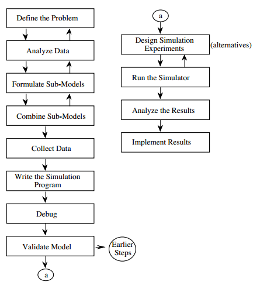
■ 外因的/内因的な変数(待ちキューの例)
|
外因的変数
内因的変数
|
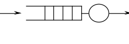 |
■ 制御する/しない変数
例：サーバ数によるキュー待機時間への影響を調べたい
■ システムの状態を表す変数(= 状態変数)
例：キューにあるタスクの数
機械の動作 |
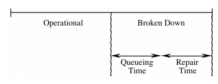 |
システムの動作
|
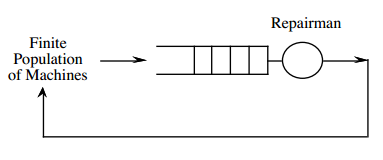 |
■ Arrival event(壊れた機械が到着)
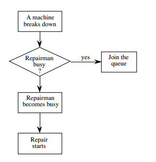
■ Departure event(修理された機械が出発)
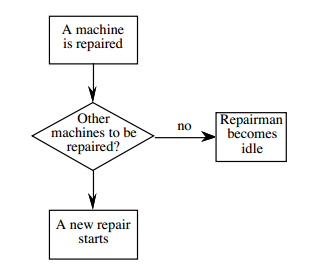
■ 2つのイベントをシミュレーションモデルに
組み込むためにクロック変数が必要
(各クロックは、次に機械が壊れる時刻)
(次に機械の修理が完了する時刻)
■ 複数の機械とリペアマンが一人のとき
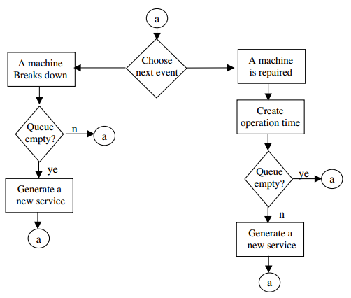
シミュレーションの例
| 機械 | 3台 |
|---|---|
| 動作時間 | 10単位時間 |
| 修理時間 | 5単位時間 |
MC = マスタークロック、現在の時間を表す
CL1~3= 機械1~3が壊れる時刻を保持
CL4 = 修理が完了する時刻を保持
n = キューに入っている壊れている機械の数
R = リペアマンの状態(0->idle, 1->busy)
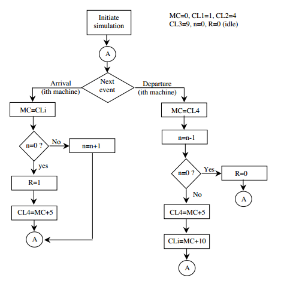
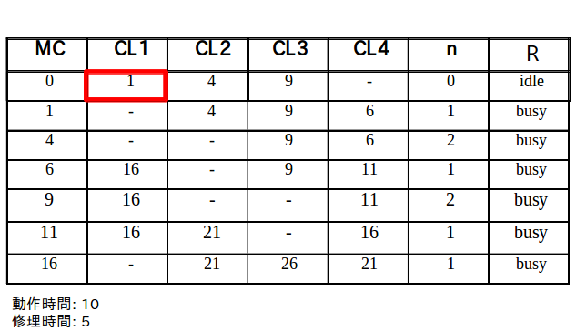
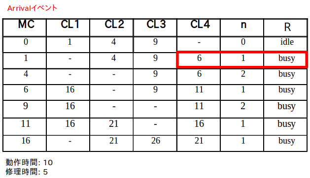
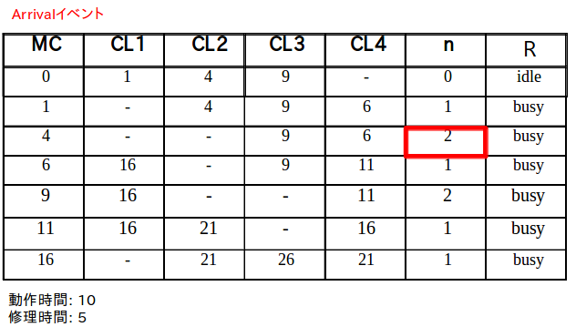
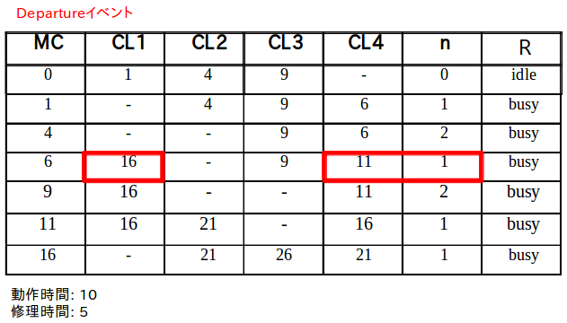